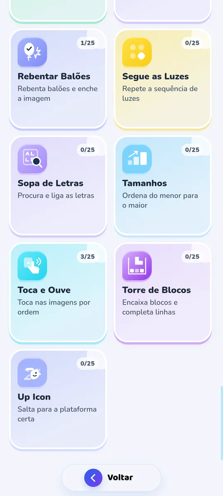
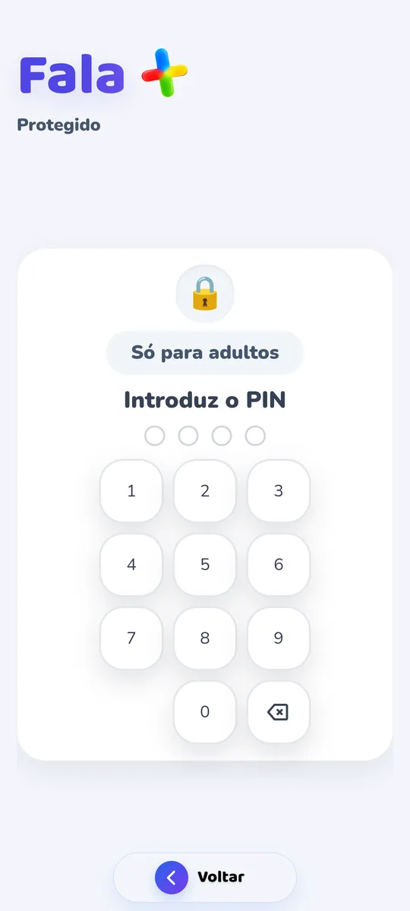

Pedir o que se quer
Apontar nem sempre chega. Com imagens e voz, a criança constrói a frase e ouve-a em voz alta.
Android · em breve no Google Play
A Fala+ junta imagens, voz e mais de 50 jogos para a criança comunicar, aprender palavras e brincar, ao seu ritmo. Em casa, na escola e entre sessões de terapia da fala.
Porque existe a Fala+
Comunicar é mais do que falar. Um olhar, um gesto, uma imagem: tudo conta. A Fala+ nasceu para dar mais formas de dizer e mais vontade de experimentar.
Apontar nem sempre chega. Com imagens e voz, a criança constrói a frase e ouve-a em voz alta.
Em vez de vídeos sem fim, jogos curtos e sem anúncios, onde cada jogada traz palavras novas.
Família, escola e terapeutas da fala com a mesma ferramenta, o mesmo progresso e as mesmas palavras.
Comunicar, jogar e brincar numa só app, pensada para crianças e para quem as acompanha.
Conheça a Fala+
Para pedir, partilhar, explorar e aprender, com espaço para escolher o que faz sentido em cada momento.
Escolher o que se quer dizer, construir uma frase e ouvi-la em voz alta. Um quadro de comunicação com imagens para pedir e partilhar, com a voz e as fotografias da família.
Memória, cores, palavras, sílabas e muitos desafios, em 7 classes com 20 níveis cada.

Um percurso por níveis para quem já sabe ler e para quem ainda está a descobrir as palavras.
O adulto escolhe a categoria e o nível a treinar. A criança descobre os desafios preparados para ela.
Como funciona
Nome, mascote e se a criança já sabe ler. A app adapta-se a partir daí.
Comunicar, Caminhada, Jogos, Percurso Guiado ou Brincar. A criança explora, o adulto orienta.
Estrelas, medalhas, palavras aprendidas e um relatório semanal em PDF para partilhar.
Bolhas de Sabão · Rebenta a bolha pedida.
Um olhar por dentro
Veja os jogos em ação. Escolha uma demonstração e descubra como as palavras fazem parte da brincadeira.
Vídeos reais da Fala+. Carregue em reproduzir para começar.
Uma criança. Uma equipa.
A mesma app em diferentes momentos do dia, com ferramentas para quem brinca, ensina e acompanha.
Partilhar uma brincadeira, dar voz a um pedido e acompanhar as pequenas conquistas do dia a dia.
Escolher atividades, acompanhar diferentes perfis e consultar o relatório semanal em PDF para apoiar a análise e a partilha.
Explorar palavras e imagens sobre emoções, rotinas, escola e outros temas familiares à criança.

Familiar para a criança. Útil para o adulto.
Em nenhum dos planos. Nada distrai a criança.
Explicados na política de privacidade, com eliminação da conta.
Atividades desenhadas com especialistas em educação e psicólogos.
Apoia a terapia da fala; não substitui avaliação nem acompanhamento profissional.
Mais do que uma app
Artigos claros e gratuitos sobre fala, linguagem e comunicação, para famílias, educadores e terapeutas.
Atraso na fala, comunicação aumentativa, bilinguismo, autismo, rotinas visuais e muito mais. Com fontes e sem promessas milagrosas.
Explorar os artigos 3 dicasTodos os dias, três ideias simples para pôr em prática com a criança, tiradas de um artigo.
Ver a dica de hojeOs planos da Fala+
A app tem um plano gratuito e uma opção Premium. Deixe o seu email e enviaremos novidades quando a disponibilidade no Google Play for anunciada.
Para começar
As primeiras descobertas, sem publicidade.
Para continuar
A experiência completa da Fala+.
3,99 € no primeiro mês, depois 7,99 €/mês. Subscrição mensal com renovação automática, IVA incluído; gerida na Google Play.
Saber mais sobre o PremiumAntes de começar
Não encontrou a resposta?
Fale connosco
Siga-nos no Instagram
A Fala+ ainda não está disponível no Google Play e a data de lançamento para Android não foi anunciada. Deixe o seu email no formulário de contacto e enviaremos novidades quando houver informação sobre a disponibilidade.
Sim, em dispositivos Android. A Fala+ ainda não está disponível para iPhone ou iPad.
A Caminhada tem percursos para quem já sabe ler e para quem ainda não sabe. As imagens e as instruções faladas acompanham a experiência.
Não. É uma ferramenta complementar para brincar e explorar a comunicação, em casa, na escola ou entre sessões. Não substitui avaliação ou acompanhamento profissional.
Não. A Fala+ não mostra publicidade em nenhum dos planos.
Sim. Na Área Adulto pode personalizar palavras com gravações e fotografias, tornando a experiência mais próxima do dia a dia da criança.
Consulte a política de privacidade, onde também encontra informação sobre a eliminação da conta e dos dados.
Android · em breve no Google Play
Deixe o seu email e avisamos quando a Fala+ chegar ao Google Play. Tem uma dúvida ou uma ideia? Escreva-nos: lemos todas as mensagens e respondemos para o email que indicar.
Também pode escrever para apoio@falamais.pt ou seguir-nos no Instagram, @falamais.app.
Em breve no Google Play
Avisem-me